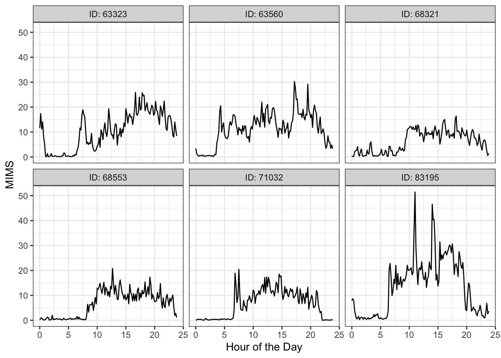
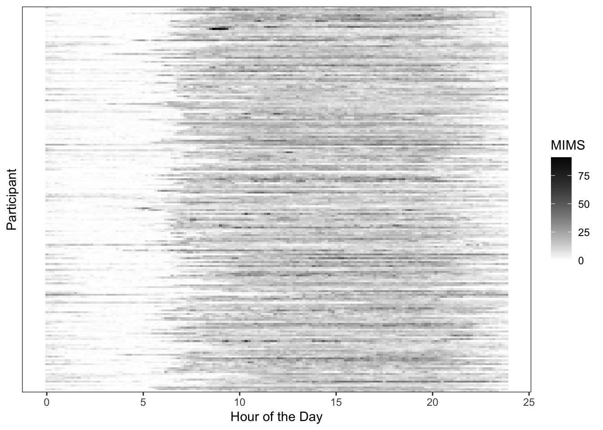
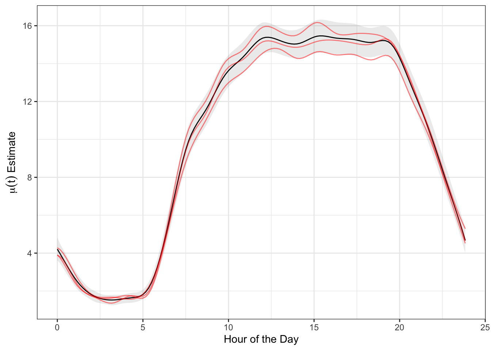
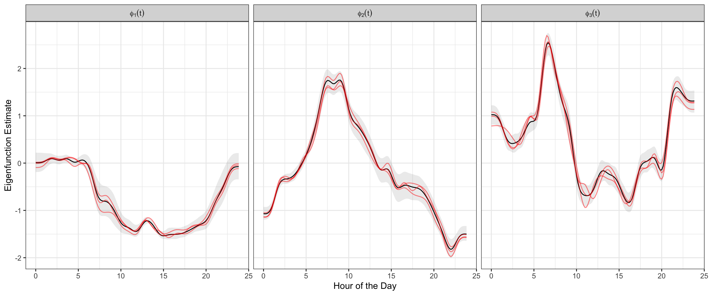
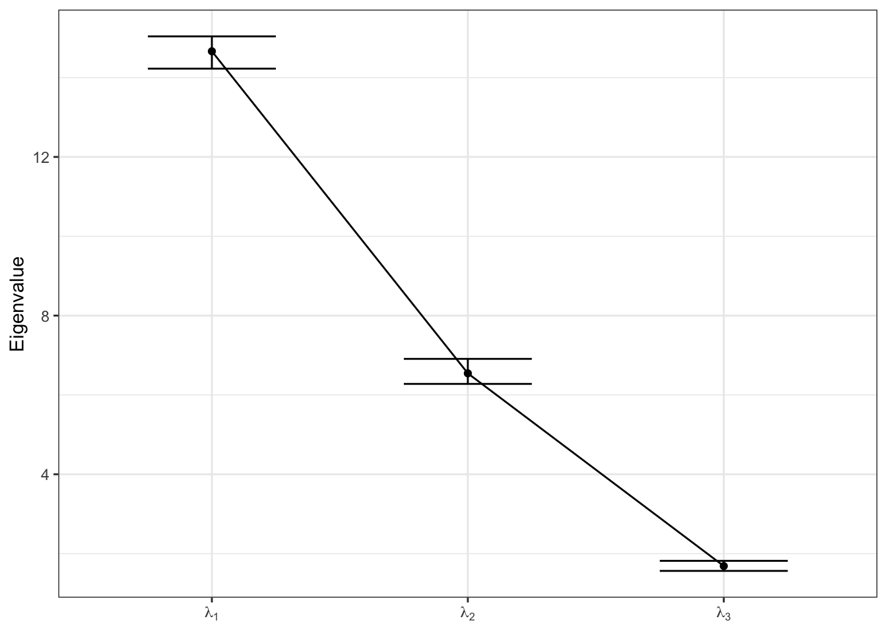

source("FAST_support/Libs.R")
source("FAST_support/Bases.R")
source("FAST_support/Convergence.R")
source("FAST_support/PostProcess.R")
source("FAST_support/FAST_Help.R")FAST: Bayesian FPCA Vignette
Read in the NHANES Accelerometry Data
For this brief example analysis, we leverage the objective physical activity data from wrist-worn accelerometry collected as part of NHANES 2011-2014. This dataset is made publicly available as part of “Functional Data Analysis with R” and can be downloaded from the accompanying website. We take a random subsample of 200 individuals subsampled every 10 minutes during the day (144 total measurements) for the sake of time.
data_path = "http://www.ciprianstats.org/sites/default/files/nhanes/nhanes_fda_with_r.rds"
download.file(data_path, "nhanes.rds", mode = "wb")
accel_data = readRDS("nhanes.rds")
file.remove("nhanes.rds")
set.seed(12345)
chosen_idxs = sample(1:nrow(accel_data), 200)
accel_mat = unAsIs(accel_data$MIMS)[chosen_idxs, ]
accel_df = data.frame(accel_mat)
colnames(accel_df) = 1:1440
accel_df$ID = accel_data$SEQN[chosen_idxs]
accel_df = accel_df %>%
pivot_longer(-c(ID), names_to = "MoD", values_to = "MIMS") %>%
mutate(MoD = as.numeric(MoD),
Window = (MoD - 1) %/% 10) %>%
group_by(ID, Window) %>%
summarize(MIMS = mean(MIMS)) %>%
mutate(MoD = Window * 10)Visualization of Data Structure
Now that we have the data, we perform quick visualizations to get an idea of the types of patterns present. We first randomly select 5 participant’s MIMS (monitor-independent movement summary) curves.
set.seed(0935867)
chosen_ids = sample(unique(accel_df$ID), 6)
accel_df %>%
filter(ID %in% chosen_ids) %>%
mutate(HoD = MoD/60, ID = paste0("ID: ", ID)) %>%
ggplot(aes(x = HoD, y = MIMS, group = ID)) +
geom_line() +
facet_wrap(.~ID) +
theme_bw() +
labs(x = "Hour of the Day", y = "MIMS")
We can alternatively visualize the entire population using a heatmap structure, where each row is a participant and darker colors correspond to higher activity levels (as in “Functional Data Analysis with R”).
accel_df %>%
mutate(ID = factor(ID),
HoD = MoD/60) %>%
ggplot(aes(x = HoD, y = ID)) +
geom_tile(aes(fill = MIMS)) +
theme_bw() +
theme(axis.text.y = element_blank(), axis.ticks.y = element_blank(),
panel.grid.major = element_blank(), panel.grid.minor = element_blank(),
panel.background = element_blank()) +
scale_fill_gradient(low = "white", high = "black") +
labs(x = "Hour of the Day", y = "Participant")
This visualization indicates that activity is strongest between the hours of 8AM and 10PM, as would be expected. However, there is substantial heterogeneity both in when individuals start and end their days, as well as the amount of activity they engage in on average throughout the course of the day.
Fitting FAST Bayesian FPCA
We first retrieve the matrix representation of the full dataset using the appropriate wrangling. We then define the constants, using spline basis of dimension \(Q = 25\) and \(K = 3\) FPCs. We provide these values, along with the input data matrix, to the “FAST_datalist()” function, which concludes collating all requisite inputs to the FAST STAN implementation. This includes generating the spline bases for the fixed and random effects functions (b-splines and orthogonal splinets, respectively), along with their associated quadratic penalty matrices. All of these elements are collated into the STAN input list.
# Place data in wide matrix format
Y_mat = accel_df %>%
ungroup() %>%
select(-c(Window)) %>%
pivot_wider(names_from = MoD, values_from = MIMS) %>%
select(-c(ID)) %>% as.matrix()
# Define constants
Q = 25
K = 3
# Collate list of arguments
Domain = sort(unique(accel_df$MoD))/60
Scaled_Domain = (Domain - min(Domain))/(max(Domain) - min(Domain))
data_list = FAST_datalist(Y_mat, Q, K, Scaled_Domain)With all requisite inputs generated, we can finally make the call to RSTAN in order to fit the model, accomplished as follows.
fit_mod = stan(file = "FAST_support/FAST.stan",
data = data_list,
chains = 4,
cores = 4,
warmup = 3000,
iter = 5000)Evaluating Fit and Aligning Results
We first extract and summarize all relevant model parameters, aligning the FPCs and scores according to sign and order.
objects = FAST_extract(fit_mod, data_list$B_FE,
data_list$B_RE, Domain, data_list)
align = align_weights(objects$Weights, objects$Score, data_list$B_RE)
scores_samples = out_Score(align$Score)
EF_CI = CI_EF(align$EF, Domain)
EF_est = Psi_SVD_FPC(align$Weights, data_list$B_RE, Domain, K)
Mu_df = out_FE(objects$Mu, Domain) %>%
group_by(Arg) %>%
summarize(Est = mean(Mu),
LB = quantile(Mu, probs = c(0.025)),
UB = quantile(Mu, probs = c(0.975)))The next step is assessment of model convergence using Gelman-Rubin RHat statistics. Principal component sign and ordering are aligned prior to calculating these sampling diagnostics. These measures are calculated using the “RHat_FAST()” function as follows. This function calculates the median and max RHat observed for each FPC/covariate grouping within parameter families. The results below indicate that all parameters have converged according to the heuristic RHat < 1.05 threshold.
rhats = RHat_FAST(fit_mod, data_list, align$EF[[1]])
# FPCs, grouped by FPC/functional component
rhats$Func# A tibble: 4 × 3
Function Med_RHat Max_RHat
<chr> <dbl> <dbl>
1 FPC 1 1.02 1.02
2 FPC 2 1.02 1.02
3 FPC 3 1.00 1.00
4 Mu 1.01 1.01# Scores, grouped by FPC
rhats$Score# A tibble: 3 × 3
FPC_Num Med_RHat Max_RHat
<chr> <dbl> <dbl>
1 FPC 1 1.01 1.03
2 FPC 2 1.01 1.02
3 FPC 3 1.00 1.01# Smoothing parameters, grouped by functional component
rhats$Smoothing_Params Function RHat
1 FPC 1 1.0002062
2 FPC 2 0.9997524
3 FPC 3 0.9997878
4 Mu 0.9997878# Variance components (eigenvalues and noise variance)
rhats$Variances Element RHat
1 Lambda_1 1.007618
2 Lambda_2 1.012016
3 Lambda_3 1.000078
4 Sigma2 1.000626To evaluate the adequacy of \(K = 3\) principal components, we evaluate the posterior distribution of variability explained. Results indicate that \(K = 3\) principal components explains \(\approx 80\)% of the variability in the observed data.
# True data in sparse matrix form
data_var = var(as.vector(Y_mat))
# Modeled smooths in sparse matrix of dim. samples x ppts x obs
samples_matrix = Smooth_Raw(objects$Mu, align$EF, align$Score, data_list)
n_samp = dim(samples_matrix)[1]
var_expl = rep(0, n_samp)
for (j in 1:n_samp) {
model_matrix = samples_matrix[j, , ]
resids = Y_mat - model_matrix
var_expl[j] = 1 - var(as.vector(resids)) / data_var # 1 - RSS/TSS across covariates
}
# Summarize global variance explained over posterior samples
summary(var_expl) Min. 1st Qu. Median Mean 3rd Qu. Max.
0.7803 0.7811 0.7813 0.7813 0.7815 0.7822 Visualizing Principal Components
With FAST fit, we can now visualize the extracted and aligned model components: fixed effects function \(\mu(t)\), eigenfunctions \(\phi_k(t)\), and eigenvalues \(\lambda_k\). We first visualize the fixed effects mean \(\mu(t)\), displaying the posterior mean estimate, equal-tail 95% credible interval, and 3 posterior samples.
chosen_samples = sample(length(objects$Mu), 3)
func_samples = map(chosen_samples, function(idx){
out_df = data.frame(Mu = objects$Mu[[idx]],
Arg = Domain, Sample = idx)
return(out_df)
}) %>% list_rbind()
Mu_df %>%
ggplot(aes(x = Arg)) +
geom_line(aes(y = Est)) +
geom_ribbon(aes(ymin = LB, ymax = UB), alpha = 0.1) +
geom_line(data = func_samples, aes(y = Mu, group = Sample), color = "red", alpha = 0.5) +
theme_bw() +
labs(x = "Hour of the Day", y = parse(text = "mu(t)~Estimate"))
We can similarly visualize the samples of eigenfunctions \(\phi_k(t)\), again including the estimate, equal-tail 95% credible interval, and 3 posterior samples in red.
func_sample = map(chosen_samples, function(idx){
out_df = FPC_df(align$EF[[idx]], Domain) %>%
mutate(Sample = idx,
EFLab = paste0("phi[", substring(FPC_Num, 4), "](t)"))
return(out_df)
}) %>% list_rbind()
left_join(EF_est, EF_CI) %>%
mutate(EFLab = paste0("phi[", substring(FPC_Num, 4), "](t)")) %>%
ggplot(aes(x = Arg)) +
geom_line(aes(y = FPC_Val)) +
geom_ribbon(aes(ymin = LB, ymax = UB), alpha = 0.1) +
geom_line(data = func_sample, aes(y = FPC_Val, group = Sample), color = "red", alpha = 0.5) +
facet_wrap(.~EFLab, labeller = label_parsed) +
theme_bw() +
labs(x = "Hour of the Day", y = "Eigenfunction Estimate")
We can also evaluate the variability decomposition by plotting the estimated eigenvalues \(\lambda_k\) sequentially with their equal-tail 95% credible intervals.
labs = paste0("lambda[", 1:K, "]")
names(labs) = paste0("FPC ", 1:K)
map(1:length(align$Score), function(x){
eigenvals = apply(align$Score[[x]], 2, var)
return(data.frame(FPC = paste0("FPC ", 1:K),
EVal = eigenvals))
}) %>% list_rbind() %>%
group_by(FPC) %>%
summarize(Est = mean(EVal),
LB = quantile(EVal, probs = c(0.025)),
UB = quantile(EVal, probs = c(0.975))) %>%
ggplot(aes(x = FPC, y = Est, group = "")) +
geom_point() +
geom_line() +
geom_errorbar(aes(ymin = LB, ymax = UB), width = 0.5) +
scale_x_discrete(labels = parse(text = labs)) +
labs(y = "Eigenvalue") +
theme_bw() +
theme(axis.title.x = element_blank())
This document just visualizes a particular case of applying the “FAST” approach to perform fully-Bayesian Functional PCA. All supporting STAN and R code here is designed to be flexible, such that it may directly be applied to any other similarly structured problem.